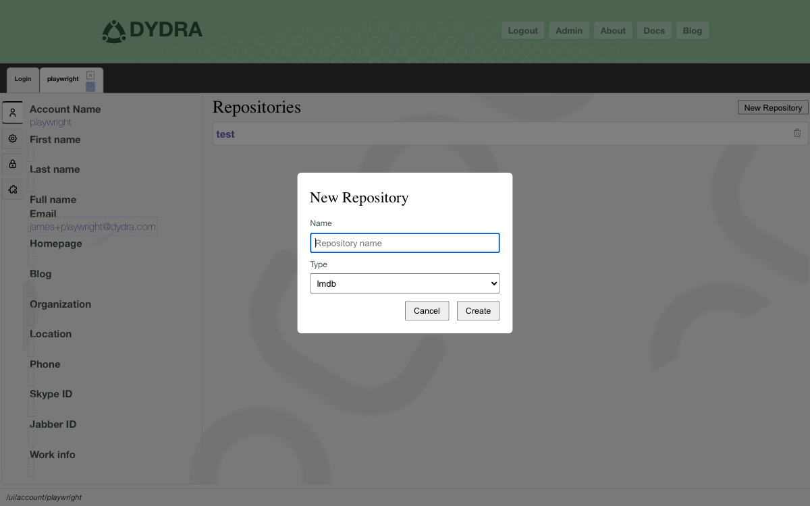
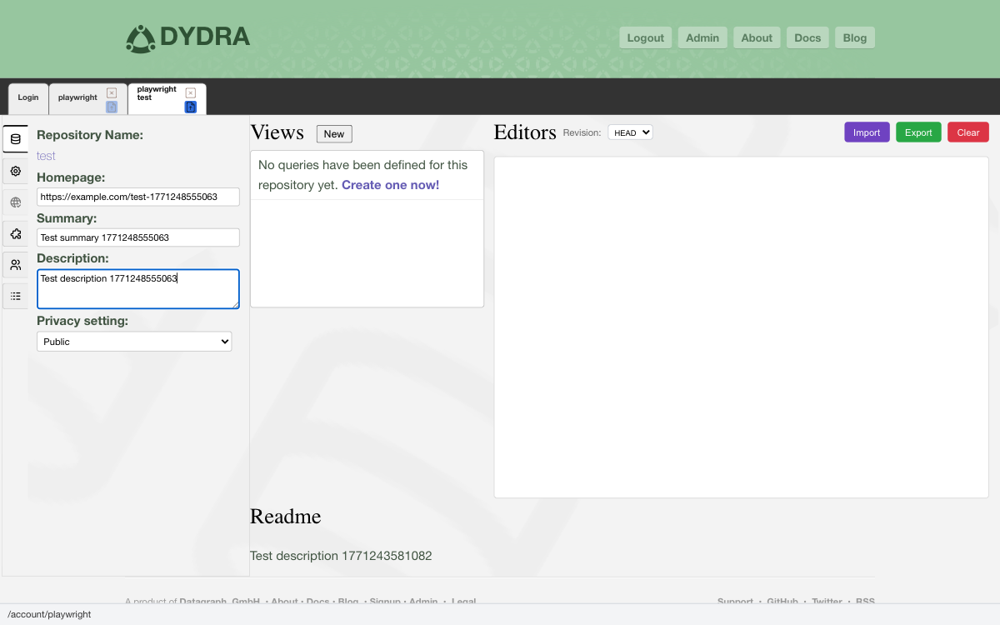
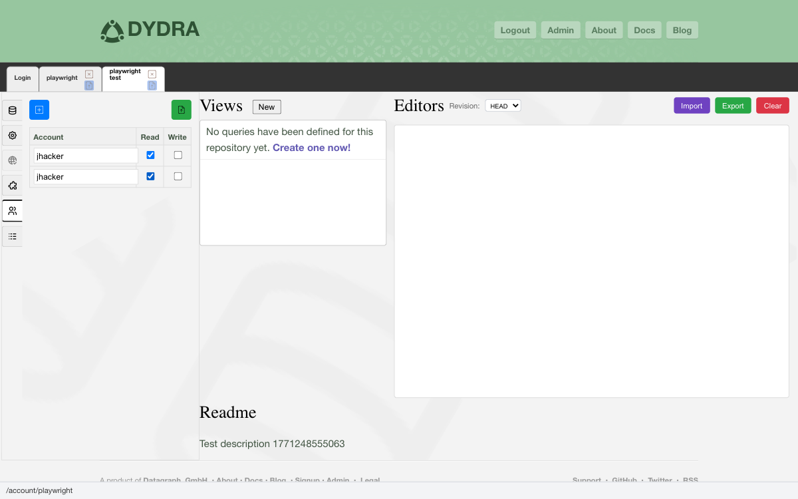

Dydra Studio · user manual · 03
Repository Operations
This chapter tells you how to create a repository, edit its metadata, import and export data, manage collaborators, and delete a repository.
Dydra Studio · user manual · 03
This chapter tells you how to create a repository, edit its metadata, import and export data, manage collaborators, and delete a repository.
To create a repository in your account:
Step 1
Open your account page: click your account name in the navigation.
Step 2
Click New Repository, in the repositories section or the account sidebar.
Step 3
A dialog asks for a repository name. Give it one no other repository in the account holds. You may also choose a type:

Figure 1: Repository creation dialog with repository name entered
Step 4
Click OK or press Enter to create the repository.
Step 5
The service creates the repository and opens its page.
Note
a repository name must be unique within your account. It may hold letters, numbers, hyphens, and underscores.
Open a repository and you see:
Edit the metadata fields to say what the repository holds.
| Field | Description |
|---|---|
homepage |
URL to the repository's homepage |
summary |
Brief summary of the repository |
description |
Detailed description of the repository |
abstract |
Abstract or overview of the repository |
privacy_setting |
Privacy setting (e.g., "private", "public") |
permissible_ip_addresses |
The IP addresses that may reach the repository, one per line |
prefixes |
RDF namespace prefixes (one per line) |
Step 1
Open the repository page you want to edit.
Step 2
Find the field you want to edit in the repository information section.
Step 3
Double-click the field value. The field turns into an input box.

Figure 2: Repository metadata field in edit mode with new value entered
Step 4
Type the new value, or change what is there.
Step 5
Press Enter, or click outside the field, to hold the change locally.
Step 6
Click Save, in the tab bar, to write your changes to the server.

Figure 3: Repository page showing the Save button in the tab bar
Note
the application tracks only the fields you touched. Save sends those fields alone.
Import RDF data into your repository from a local file or a remote URL.
Import any of these:
Step 1
Open the repository you want to import into.
Step 2
Click Import, in the repository actions area.
Step 3
Choose File Upload or Choose File.
Step 4
Find the file on your computer and select it.

Figure 4: Dataset import dialog with file selected, ready to import
Step 5
The dialog reads the format from the file extension.
Step 6
Click Import or Upload to start.
Step 7
Watch the progress. The application reports success when the import finishes.
Step 1
Open the repository you want to import into.
Step 2
Click Import.
Step 3
Choose URL Import, or type a URL into the import dialog.
Step 4
Type the URL of the RDF data you want.

Figure 5: Dataset import dialog with URL entered, ready to import
Step 5
Name the content type, if the dialog cannot read it from the URL.
Step 6
Click Import to start.
Note
a large import takes time. It runs in the background, so carry on working while it does.
Export your repository in any of several RDF formats.
Choose one of these:
Step 1
Open the repository you want to export.
Step 2
Click Export, in the repository actions area.
Step 3
Choose a format from the dropdown.

Figure 5: Dataset export dialog with export format selected, ready to export
Step 4
Click Export or Download.
Step 5
The browser downloads the file, under the extension its format calls for.
Note
the repository page also carries a direct download URL, which hands you the data in Turtle.
Add other users as collaborators on your repository, and grant each one read or write access.
Step 1
Open the repository you want to share.
Step 2
Find the Collaboration section, in a tab or the sidebar.
Step 3
Click Add Collaborator.
Step 4
Type the collaborator's account name.

Figure 6: Collaborator addition form with account name and permission level selected
Step 5
Choose the permission level:
Step 6
Click Add or Save.
Step 7
Click Save, in the tab bar, to write the collaboration changes to the server.
Note
Four rules worth keeping:
Step 1
Open the repository's collaboration section.
Step 2
Find the collaborator in the list.
Step 3
Click Delete or Remove — the trash icon — beside the name.

Figure 7: Collaborator removal confirmation dialog
Step 4
Confirm the removal, if the application asks.
Step 5
Click Save, in the tab bar, to write the change to the server.
Step 1
Open the repository's collaboration section.
Step 2
Find the collaborator whose permissions you want to change.
Step 3
Click the permission level — Read or Write — or the edit button beside it.

Figure 8: Collaborator permission editing with new permission level selected
Step 4
Choose the new level.
Step 5
Click Save, in the tab bar, to write the change to the server.
Clear a repository to remove every triple from it and keep the repository itself.
Warning
a clear is irreversible. It deletes every RDF statement in the repository, and nothing brings them back.
Step 1
Open the repository you want to clear.
Step 2
Find Clear or Clear Repository, in the repository actions area.
Step 3
Click it. A confirmation dialog opens.

Figure 9: Repository clear confirmation dialog with warning message
Step 4
Read the warning.
Step 5
Confirm, if you are sure.
Step 6
Wait. The application reports success when the clear finishes.
Delete a repository to remove it and everything in it, for good.
Warning
a delete is permanent. It removes the data, the views, and the settings, and nothing brings them back.
Step 1
Open the repository you want to delete.
Step 2
Find Delete Repository, in the repository actions area or its settings.
Step 3
Click it. A confirmation dialog opens.
Step 4
Read the warning. The dialog may ask you to type the repository name.
Step 5
Confirm, if you are quite sure.
Step 6
The service deletes the repository and returns you to your account page.
If an import fails, check that:
If an export gives you trouble, check that:
With your repositories in order, you can: